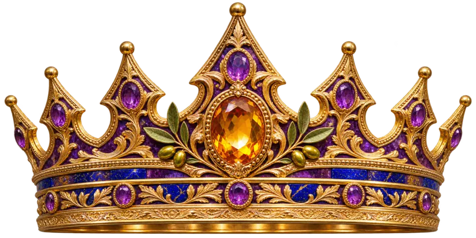
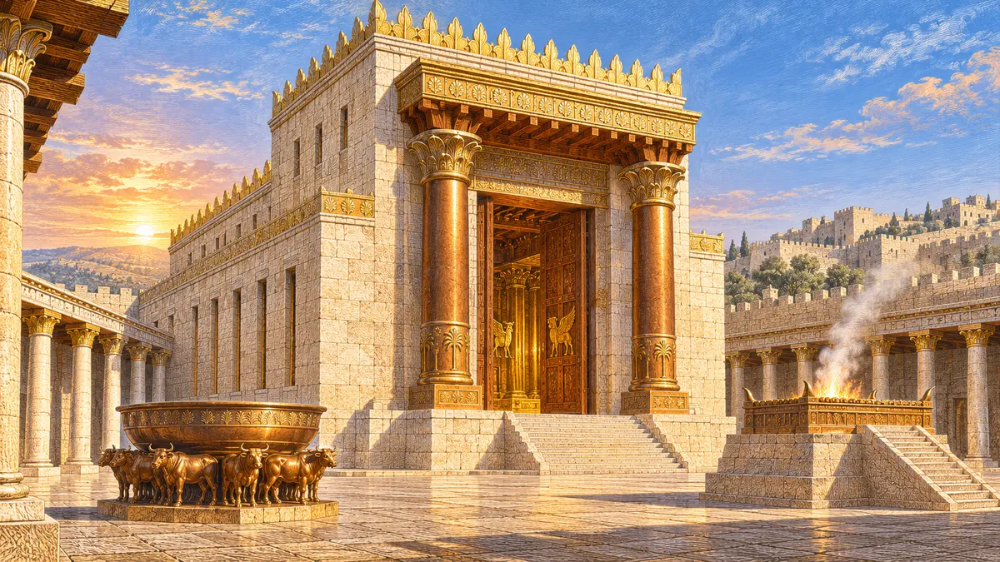

📖 המקרא
מלכים א׳ ג׳–ח׳; משלי; קהלת; שיר השירים. ייחוס ספרי החכמה לשלמה מוצג כמסורת.
עיון בטקסט המקראי ↗כתר החכמה • כתר המשפט • כתר המידות
מסע של מלכות פנימית: מן הפסוקים ועד המעשה, מן המשל ועד התבונה, ומירושלים העתיקה אל הבחירות הקטנות של כל יום.
המקרא מספר על בקשת שלמה ללב שומע, על משפטו ועל בניין המקדש. ספרי החכמה המיוחסים לו במסורת פותחים שערים לאחריות הדיבור, יושרה, הקשבה ומשמעות החיים.
כאן כל שער מסתיים במעשה: דבר קטן, מוגדר ואפשרי שמתרגם רעיון לחיים.
עיון במפת שמונת השערים ←כִּי טוֹבָה חָכְמָה
מִפְּנִינִים
משלי ח׳, י״א
44 זוגות מקוריים של ״סור מרע״ ו״עשה טוב״, בהשראת נושאים במשלי, בקהלת ובמלכים.
בחר קלף, הפוך אותו וחשוף את התרגול. אפשר להדפיס או לשמור את הטקסט.
כל עשרת האיורים נוצרו בנפרד כ־PNG. הנוסחים הם יצירות לימוד מקוריות, ולא ציטוט מילולי מספרי המקרא.
↓ הורד את נוסחי עשרת הקלפיםסטיקרים, לוגואים, אייקונים, מסגרות, באנרים, כפתורים ורקעים. כל יצירה נמצאת בקובץ PNG עצמאי ואפשר להורידה בנפרד.

התצוגה שומרת על שקיפות אמיתית. כל סטיקר מקבל הילה בגוון שמתאים לו; הלחיצה על התמונה פותחת את איור ה־PNG המלא.
שמונה שערים, 24 פרקי יסוד כתובים, עם מקור, משל או רעיון ותרגול מעשי.
פרקי מלכים א׳ ה׳–ח׳ מתארים הכנות, חומרי בנייה, בעלי מלאכה, עבודות אומנות, את הכנסת הארון ואת תפילת חנוכת הבית.

מה מספרת ״צוואת שלמה״? מדוע מופיעים 72 שמות ב״מפתח שלמה הקטן״? ואיך מבחינים בין מסורת מאוחרת, סיפור סמלי ומקור מקראי?
פתח את שער ע״ב השמות ←המחקר מוצג כהיסטוריה של כתבים ורעיונות; תרגול המידות כאן הוא פרשנות מוסרית מקורית.מלכים א׳ ג׳–ח׳; משלי; קהלת; שיר השירים. ייחוס ספרי החכמה לשלמה מוצג כמסורת.
עיון בטקסט המקראי ↗״צוואת שלמה״; *Lemegeton / Ars Goetia*. אלו אינם פרקי תנ״ך, ויש הבדלים בין רשימותיהם וגרסאותיהם.
מקורות השער המיוחד ←ניסוח הליקוטים, הקלפים, השאלות והמעשים היומיים נערך לפרויקט הזה. אין לייחס אותם במרכאות לשלמה.